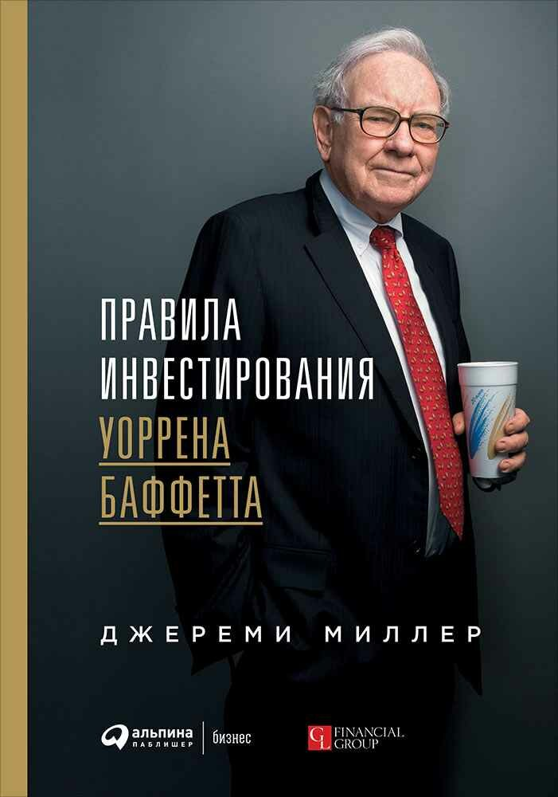

Правила инвестирования Уоррена Баффетта
Рецензия на книгу «Правила инвестирования Уоррена Баффетта» — Джереми Миллер

Книга основанная на письмах Баффетта своим партнёрам, скорее литературное произведение чем финансовое. Рассказывает нам о том как думал Баффетт и какие решения принимал. Так же показывает некоторые примеры работы с акциями в разных ситуациях складывающихся на рынке.
Повторить путь Баффетта у нас не получится
После прочтения для себя сделал вывод, что повторить путь Баффетта у нас не получится. Но стрелял очень точно. Ещё до основания большого бизнеса со страхованием, умел работать с большими рисками и всегда выигрывал.
Не боялся вкладывать по 40% в одну акцию
Ни один год партнёрства не закончил с минусом, всегда обгоняя Dow Jones. Хотя и признавался что «мистер Рынок», в некоторые года может обогнать товарищество, за счёт не напускного интереса к акциям из Dow Jones.
«Лучше купить отличный бизнес по хорошей цене, чем купить хороший бизнес по отличной цене»
Несколько моментов которые мне понравились:
- Баффетт в начале товарищества любил концентрировать активы в не более 6 акциях. Говоря про 7, что нужно очень хорошо подумать что бы не отнести деньги первым 6. Скорее всего 7 позиция это ошибка. Вообще диверсификация уменьшает доходность. Правильно выбирая акции можно обогнать среднюю по рынку за счёт концентрации в активах
- Покупал доллар за условные 70 центов. Искал недооценённые компании. Часто применял правило «Сигаретных окурков», замечательно описанное в книге его учителя Бенджамина Грэма «Разумный инвестор»
- Всегда был искренним с товарищами, он кстати получил награду по литературе за эти письма
- Всё-таки сделал вывод что: «Лучше купить отличный бизнес по хорошей цене, чем купить хороший бизнес по отличной цене». Менеджмент отличного бизнеса сам заработает нам денежки, нужно только вложить в них деньги когда цена хороша. Правило «сигаретных окурков» хорошо только с небольшими суммами денег